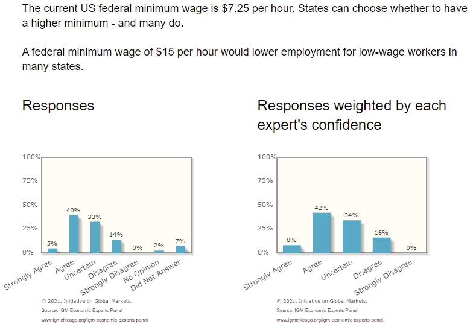
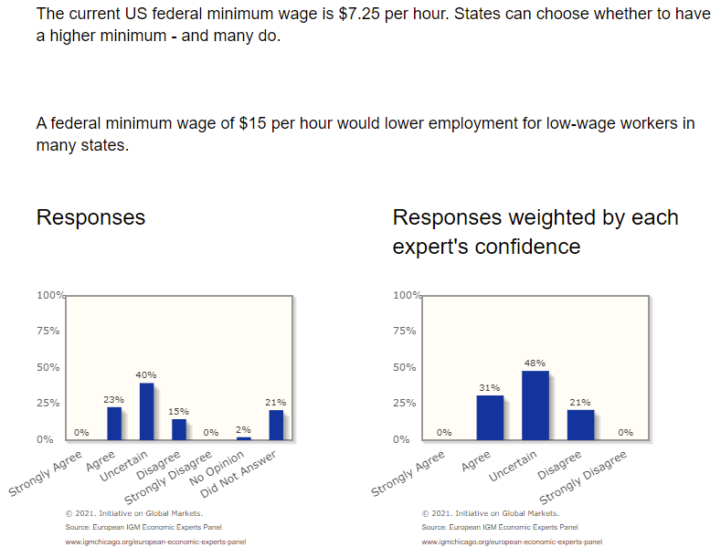

One of economics’ most famous papers – the 1994 minimum wage study by David Card and Alan Krueger – has just won David Card (pictured) half of a Nobel Prize in Economics. The overall reasons for Card's award are well explored here and here and here, and by Card himself here.
David Card, 2021 Nobel winner (and nice guy to boot)
The Card & Krueger paper is widely admired. Even more remarkably, it is one of that rare breed of paper which has changed minds in economics. Before its publication, most economists tended to believe minimum wages cost jobs; after they had digested Card & Krueger, some began at least to doubt that was true.
Rather than just building a model, Card & Krueger started with a good natural experiment: the minimum wage went up in New Jersey but stayed the same in Pennsylvania, which acted as a control group. The difference in the difference between the two states before and after the law change should be the effect of the minimum wage. Hence the name of this technique – "difference in differences".
Essentially, this year's Economics Nobel celebrated natural experiments, and natural experiments are, in general, a lot better than the armchair theorising which has featured in some previous economics Nobels. They aren't exactly a new idea; their use in social science goes back at least to the 185os. But Card & Krueger's natural experiment was a notable and clever one, and it seems to have rekindled enthusiasm for them within economics.
If you think that economics should make falsifiable claims about how the world works, this seems like a good development. That makes the Card Nobel, as Club Troppo's Paul Frijters put it, one of the best picks of recent years.
But here's the thing I keep coming back to: Card & Krueger's findings are very often misrepresented as proving something they don't prove. They're terrific economics, but they are also part of what we might call the Feynman Social Science Problem.
The problems with Card & Krueger
Card & Krueger's paper was interestingly counterintuitive in the sense that in the simplest model of the economy, high prices normally make people buy less of something. Just on that logic, you might wonder why a higher minimum wage would have no effect at all on low-paid jobs. Then again, hey, the world is full of research results that look odd at the start but become perfectly normal once we understand them better, because the world is often not quite like the simplified model.
But Card & Krueger really didn't give us a solid conclusion about the general employment effects of the minimum wage. I see headlines like "The Nobel Prize winner in economics revolutionized thinking about the minimum wage" (Quartz), and I don't think it really did. The Nobel Prize citation declares that Card proved that "increasing the minimum wage does not necessarily lead to fewer jobs", and I don't think that's true either. Card & Krueger cleverly gave us evidence that raising the minimum wage might not always have the result many economists expected. That's useful and sensible, not transformative.
And there are doubts about even that evidence.
Problem 1: Taken at face value, Card & Krueger's paper says that higher wages push employment up. If people everyone took the work at face value, we'd be solving unemployment by lifting the minimum wage higher and higher. But no-one thinks that would work.
Problem 2, which is actually a bunch of problems: The Card & Krueger experiment has a number of possible holes. To take a sample:
- Earlier changes in the minimum wage law are alleged to have caused a bigger drop in teenage employment in New Jersey than in Pennsylvania.
- New Jersey employers reportedly had ample warning of the minimum wage hike, and might have chosen to lower their worker numbers before the wage rise took effect.
- We saw almost inevitable criticisms of the quality of Card & Krueger' data, some of it reasonably credible.
Problem 3, which is related to the previous two: Top professional economists don't agree on what Card & Krueger shows either. One piece of evidence: in early 2021, the Chicago Booth School's IGM panels of notable economists in the US and Europe looked at the minimum wage question in the US and could only get 15 per cent of their number to disagree with the idea that raising the US minimum wage to US$15 would lower employment among low-wage workers.
IGM US economists 2021

IGM US economists panel proposal: A US federal minimum wage of $15 per hour would lower employment for low-wage workers in many states. (Result: more economists agree than disagree, and many are unsure.)IGM European economists 2021

IGM European economists panel proposal: A US federal minimum wage of $15 per hour would lower employment for low-wage workers in many states. (Result: more economists agree than disagree, and even more are unsure.)(Be aware that the wage hike proposed here was not the same one that Card & Krueger looked at, which may be important.)
You of course might argue that the IGM panels are just a bunch of conservatives. But that seems unlikely to be the case. You can see who was on the panel by going to the US and European poll pages. Also, the same panel mechanism could not get one economist to disagree with the idea that carbon taxes are a better way to implement climate policy than cap-and-trade. And if you think many of the IGN's economics panellist are behind the times, remember that Card & Krueger published a quarter-century ago.
These sorts of problems are not unusual in economics or in the social sciences more generally. Indeed, we see them everywhere. They don't make Card & Krueger's paper bad; rather, they underline that social science experiments are almost always open to question, precisely because they are embedded in complex and messy social systems.
The Feynman Social Science Problem
I can see why Card got the Nobel, and I think this Nobel will give a fillip to the very important principal of seeking out natural experiments wherever we can.
But at the same time, the Card Nobel underlines a huge weakness in today's social sciences. Looking at the debate over Card & Krueger's paper gave me a renewed appreciation for the difficulty of drawing conclusions from natural experiments in the social sciences. It's this: in real-life situations, you often just have more going on than you know how to deal with.
Indeed, the Card & Krueger paper demonstrates what you might call the Feynman Social Science Problem: in most social science situations, it’s nearly impossible to isolate the relevant variables in an economic study with enough certainty to reach a conclusion. In physics, controlling for variables is often possible. In social science, it almost never is.
Most people don't like to say this very loudly.
The famed physicist Richard Feynman was an exception: he called social science a pseudo-science:
“I might be quite wrong, maybe they do know all these things. But I have had the advantage of having found out how hard it is to get to really know something, how careful you have to be about checking the experiments, how easy it is to make mistakes and fool yourself. I know what it means to know something. I see how they get their information. And I can’t believe that they know it – they haven’t done the work necessary, the checks necessary and ... (taken) the care necessary. I have a great suspicion that they don't know, and they're intimidating people. I think so. I don't know the world very well, but that's what I think.”
https://www.youtube.com/watch?v=tWr39Q9vBgo
Feynman's criticism has proved hard for me to shake. It's all the more powerful because it both begins and ends with disclaimers about his own knowledge ("I don't know the world very well"). And the Reproducibility Crisis that has gripped the social sciences in recent years hasn't reinforced anyone's faith in social science methodologies, either.
(That super-polymath Isaac Newton may have started the pattern: after losing a small fortune in the South Sea Bubble, he complained that he could “calculate the motion of heavenly bodies, but not the madness of people.”)
And so I have grown increasingly reluctant to trust social science findings in general.
Again, the point is not that Card & Krueger did anything wrong by the standards of the social sciences. Indeed, having found their experiment, they also worked harder than most to check their findings. And they seem to have been pretty modest about the epistemological value of their work. (Plus Card is widely described as a nice guy – and I always like to see nice guys finish first.)
The deep problem is that people take social science research findings and make more of them than they ought to do.
Economic truth, always out of reach
This is not just my contention. As I realised after first posting this piece, I am under the invisible sway of economics' master epistemologist, Ed Leamer (of "Let's Take The Con Out Of Econometrics" fame). He wrote magisterially about this issue, among others, in a Journal of Economic Perspectives article with the terrifying title of "Tantalus on the Road to Asymptopia" (see note 4). If you struggle with the Tantalus paper, try the wildly underrated Arnold Kling's salute, "Edward Leamer Deserves a Nobel Prize for Improving Argumentation That Uses Statistics".
In a 2011 video clip, Leamer put it this way:
"The layman needs to view expert talking heads with a high degree of skepticism, particularly the economists who are claiming precise knowledge about this complex, economic system.
"My view is, in economics we need to create a culture that explicitly expresses our lack of knowledge and allows people to say 'That's an interesting question, but frankly it's beyond the realm of economics in its current state to actually answer'.
"You never find that kind of statement being made.
"I think it would be better if we added humility to the enterprise and recognize that what we do is patterns and stories. We're seeing patterns in the data sets that we're examining and we're telling stories about that. That's how we're creating knowledge."
The continuing doubts on the minimum wage
Since Card & Krueger published their paper in 1994, we've seen plenty of support (see also here and here) for the idea that minimum wages don't depress low-wage employment – or at least, not enough to worry about. But some other results and interpretations that have dribbled in suggest higher minimum wages do cut jobs after all. One big study looked at the minimum wage in the US city of Seattle, which was being pushed up over several years. It estimated that an hourly minimum wage hike from US$11 to US$13 caused a huge cut in low-skilled workers’ hours – 9.4%. In case you’re wondering, Australia’s most recent minimum adult wage equated to around US$14.10 an hour.
We also have some Australian research, though not a lot. The best comes from widely admired economist Andrew Leigh, and it was done before he left the ANU for the national parliament. He is now a Labor federal MP, and doesn't seem to be talking as much as he used to about the problems with the minimum wage. But some of Leigh’s work, based on Western Australian data, has suggested that a 1.0% increase in the minimum wage could be expected to cut employment by between 0.15% and 0.39%. A 3% minimum wage rise, then, would cut 60,000 jobs or more. This is not a jobs catastrophe, but it’s not trivial, especially if your job is one of those that disappears.
My own guess is that minimum wage rises probably do cut some jobs, especially in Australia, where the minimum wage is high by world standards. But how sure am I? Not very. How many jobs might they cut? I've not much of an idea, and you shouldn't care about my view much anyway.
My other guess is that having read all this, you will probably still have a very strong opinion as to whether a minimum wage is good or bad. My argument here is that you should try to distrust your certainty a little. As Richard Feynman argued: even at their best, the social sciences are nothing like physics.
______________________________
Note 1: Yes, it's actually the Sveriges Riksbank Prize in Economic Sciences in Memory of Alfred Nobel.
Note 2: Alan Krueger, sadly, died in 2019; Josh Angrist and Guido Imbens, oddly, got a quarter of the Nobel prize-money each.
Note 3: As it happens, both David Card and Andrew Leigh have an extra point to make about the minimum wage: whatever it does to employment, it isn't the best mechanism for reducing poverty. Many minimum wage earners are students living at home in middle-class suburbs with mum and dad. As Card himself puts it, many minimum wage earners are not in poverty, and many of those in poverty are not connected to the labor market.
Note 4: In Greek myth, Tantalus was punished for cannibalism, made to stand forever in a pool of water beneath a fruit tree, the fruit just out of reach and the water always receding before he could drink. Leamer is gloomy about our chances of ever reaching perfect economic insight through either econometrics or experimentation.
Note 5: This post repeats elements of a post I wrote for Troppo in 2017. It started as an edit, but after a certain point it made more sense to make it a new post.
Note 6 (added 2021/10/19): For me at least, a frequent and annoying side-effect of posting at Club Troppo is that quickly thereafter, I find that other people have already said the same things I've said – and said them much better. In this case, this cast of party-poopers includes Ed Leamer and Russ Roberts (who contributes a particularly terrific essay titled "What Do Economists Actually Know"). If you've read this far on my post, both of their accounts probably contain more useful insights than this one.
Update, 3 May 2023: Another paper adds to the minimum wage pro-and-com - NBER Working Paper 31182 . "Using data spanning nearly four decades from the March Current Population Survey, and a dynamic difference-in-differences approach, we find that a 10 percent increase in the minimum wage is associated with a (statistically insignificant) 0.17 percent increase in the probability of longer-run poverty among all persons." Found any more of these studies? Let me know in the comments.
The Effect of New Jersey's Minimum Wage Increase on Fast-Food Employment: A Re-Evaluation Using Payroll Records
David Neumark & William Wascher
We re-evaluate the evidence from Card and Krueger's (1994) New Jersey-Pennsylvania minimum wage experiment, using new data based on actual payroll records from 230 Burger King, KFC, Wendy's, and Roy Rogers restaurants in New Jersey and Pennsylvania. ...In contrast, estimates based on the payroll data suggest that the New Jersey minimum wage increase led to a 4.6 percent decrease in employment in New Jersey relative to the Pennsylvania control group...
https://www.nber.org/papers/w5224
I have to disagree here.
I did a fairly comprehensive review of the literature a couple of years ago and concluded:
"Looking at all the evidence that is currently out there (and that I paraded above), I conclude that the balance of the evidence seems to provide considerable support in favour of policy recommendations that contradict the standard Econ 101 narrative, even if we accept that labor should be considered just any old factor of production."
https://economics.com.au/2019/04/24/living-minimum-wage-what-we-know/
P.S. I am currently updating my core-econ write-up from a couple of years back. One recent high-quality paper I came across is this one by a former colleague of mine in Prague: https://www.nber.org/papers/w28506
Wages, Minimum Wages, and Price Pass-Through: The Case of McDonald’s Restaurants
Orley C. Ashenfelter & Štěpán Jurajda
WORKING PAPER 28506
Golly !!
In my view, Feynman is quite correct.
Andreas, it seems we pretty much agree about many the findings on the minimum wages/employment debate, citing or having read many of the same studies. Since you're a real economist and I'm an amateur, I'm relieved to know that I wasn't looking in all the wrong places. I remain convinced in my view that on this debate, "I’ve not much of an idea, and you shouldn’t care about my view much anyway".
If you have the time, though, I'd be genuinely interested in your views about the piece's primary concern: what we can draw from looking at the literature in this area – because you also did a literature review. Did your review make you feel more confident about drawing conclusions from the research? Or did it leave you more concerned about the difficulties of checking the experiments and controlling for variables, and the ease of making mistakes?
I started offering some thoughts on this post and got a bit carried away :)
David,
just lost several paragraphs responding ... I guess that's what the hiccups do that CT currently experiences. Annoying. I try again:
Yes, obviously dealing with social contexts is more difficult than physics; that's not a particularly big insight even coming from Feynman. That said, for all I can tell Feynman knew as much about social science as Ross Gittins knows about academic economics. Feynman, fortunately for him, is dead so can't continue to embarrass himself with silly statements like the one you reproduced.
As to the matter at hand, the min wage debate is a complicated one last but not least because there is considerable heterogeneity hidden under averages as the recent study by Ashenfelter & Jurajda (r&r at a good journal I understand) makes clear.
That said, whenever someone ignores Doucouliagos & Stanley (2009) who provided a meta-regression analysis of minimum wage research drawing on 64 (!) minimum wage studies, controlled for publication selection bias and find, when selection effects are filtered out, “no evidence of a meaningful adverse selection effect” (p. 422) (thus confirming the earlier results of Card & Krueger), I become automatically sceptical.
Unfortunately, you see this selective sampling of the evidence a lot in the literature and on both sides of the aisle. For me selective sampling of the evidence raises all kinds of flags.
"Did your review make you feel more confident about drawing conclusions from the research? Or did it leave you more concerned about the difficulties of checking the experiments and controlling for variables, and the ease of making mistakes?"
In this case it made me more confident. But keep in mind that I enumerated ten caveats in my review and it might be even more after I have updated my review from two years ago.
I agree 100% that an increase in the minimum wage may not always lead to the result that many economists expected.